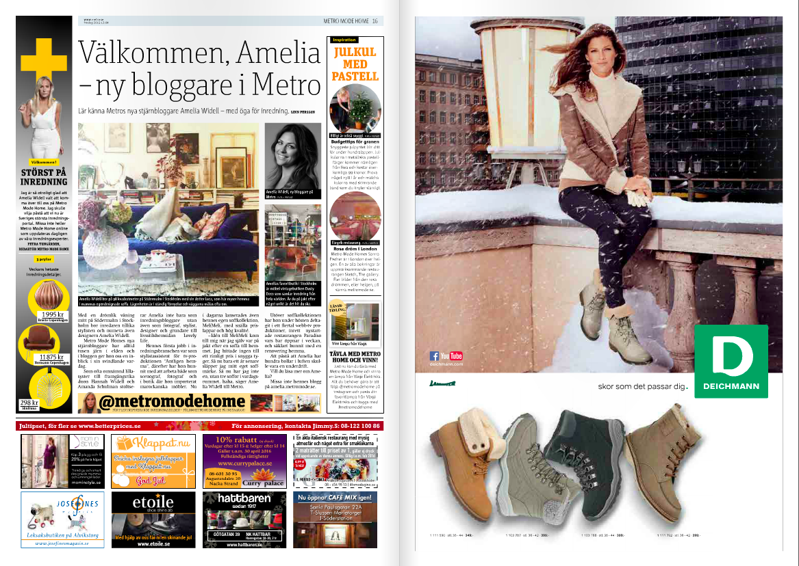

Metro Mode
In this article I wrote about silver, denim and shoulder free trends that already had entered the stage and how you could style it on your own. The preamble in the text is written by me and all the clothes I've collected at various PR agencies own image banks.
Metro Mode
In this article I wrote everything on the write side of the newspaper. All the small articles about "The Glitther Beard" to focusing on pushing for three specific bloggers at Metro Mode. On the left side took the photo of Petra Tungården, where she gives tips about christmas shopping.
Metro Mode
In this article i focused on just the side column, where I wrote everything under the heading "Trender hemma 2016".